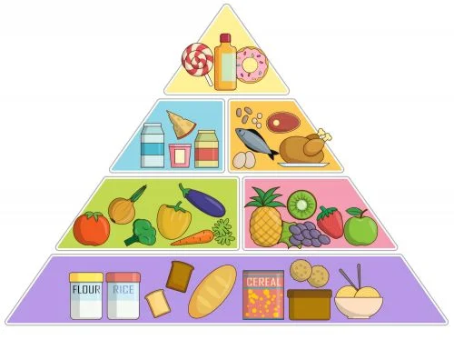

Nutrición
La nutrición es el proceso por el cual nuestro cuerpo obtiene los nutrientes necesarios para su correcto funcionamiento.
¿Qué nutrientes necesitamos para estar sanos?
- Proteínas: son esenciales para la construcción y reparación de tejidos en nuestro cuerpo.
- Carbohidratos: son la principal fuente de energía para nuestro cuerpo.
- Grasas: son necesarias para la absorción de vitaminas y minerales, y para la producción de hormonas.
- Vitaminas: son necesarias para el correcto funcionamiento de nuestro cuerpo, y se dividen en vitaminas liposolubles (A, D, E y K) y vitaminas hidrosolubles (C y complejo B).
- Minerales: son necesarios para la formación de huesos y dientes, y para el correcto funcionamiento de nuestro cuerpo.
- Agua: es esencial para la hidratación de nuestro cuerpo y para el correcto funcionamiento de nuestros órganos.
¿Cómo podemos obtenerlos de la comida?
Podemos obtener los nutrientes necesarios para nuestro cuerpo a través de una dieta equilibrada y variada, que incluya:
- Carnes, pescados, huevos y legumbres para obtener proteínas.
- Cereales, pan, pasta, arroz y patatas para obtener carbohidratos.
- Aceites, frutos secos y pescados para obtener grasas.
- Frutas y verduras para obtener vitaminas y minerales.
- Agua y líquidos para mantenernos hidratados.
¿Cómo se cocina la comida en diferentes culturas?
La forma de cocinar la comida varía mucho de una cultura a otra. Algunas culturas prefieren cocinar la comida a fuego lento, mientras que otras prefieren cocinarla a fuego alto. Algunas culturas utilizan especias y hierbas para dar sabor a la comida, mientras que otras prefieren la comida sin condimentos.
En algunas culturas, la comida se cocina en el horno, mientras que en otras se cocina en la parrilla o en la sartén. Algunas culturas prefieren cocinar la comida al vapor, mientras que otras prefieren cocinarla en agua o aceite.

¿Cuáles son los platos típicos de cada país?
Cada país tiene sus propios platos típicos que reflejan su cultura y tradiciones. Algunos ejemplos son:
- En México, los tacos, las enchiladas y el mole son platos típicos.
- En Italia, la pizza, la pasta y el risotto son platos típicos.
- En Japón, el sushi, el ramen y el tempura son platos típicos.
- En India, el curry, el naan y el biryani son platos típicos.
- En España, la paella, el gazpacho y el jamón serrano son platos típicos.
Estos son solo algunos ejemplos, pero cada país tiene una gran variedad de platos típicos que reflejan su cultura y tradiciones culinarias.
¿Cómo se preparan los alimentos?
Los alimentos pueden ser preparados de diferentes maneras, dependiendo del tipo de alimento y de la cultura culinaria. Algunas técnicas de preparación son:
- Cocción: se cocina el alimento con agua, aceite o al vapor.
- Asado: se cocina el alimento en un horno o a la parrilla.
- Fritura: se cocina el alimento sumergiéndolo en aceite caliente.
- Crudo: se consume el alimento sin cocinar, como en el caso de algunas frutas y verduras.
| Inicio | Origen de la comida | Gastronomía | Formulario |